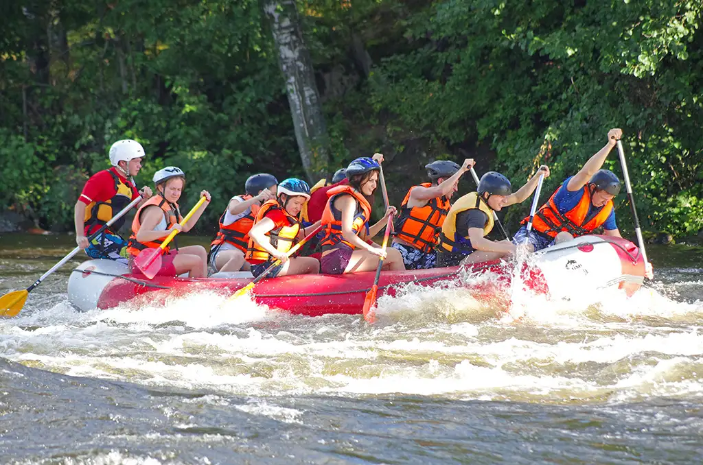
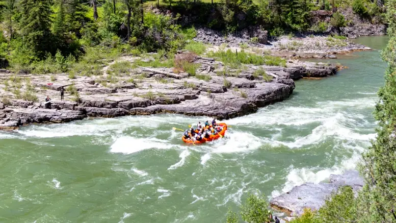
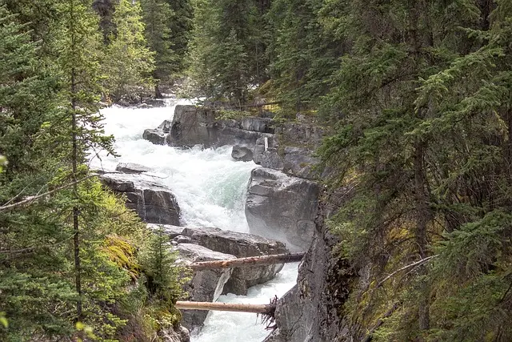
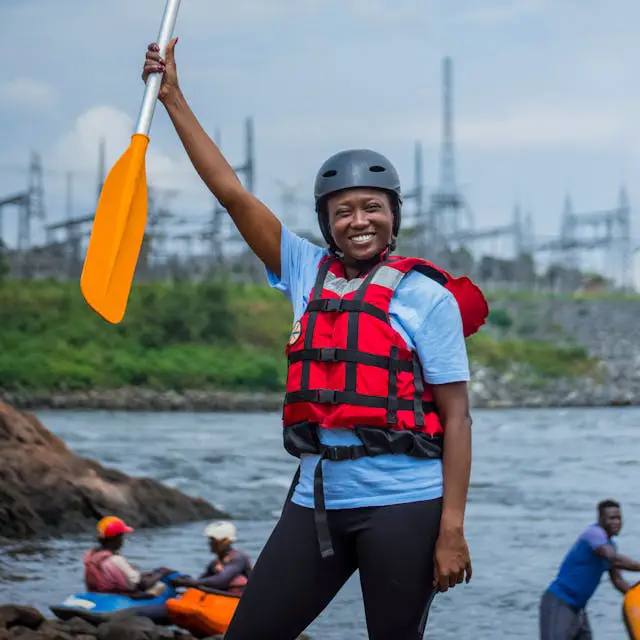

Rafting on the Emerald River is not just about adrenaline; it's also about communion with nature. Along the descent, you might encounter graceful herons, fish jumping in the swirls, or secret waterfalls hidden among the rocks. It's an experience that awakens the senses and reconnects with the essential.
Adventure du Rafting
History of Rafting
In the lush mountains and verdant valleys of an enchanted land, a wild river meandered, hiding within its depths secrets of unforgettable adventures. This magical place, named "Emerald River," was known for its impetuous waters and breathtaking landscapes. Thrill-seekers and nature lovers found here a unique playground: rafting.
In the lush mountains and verdant valleys of an enchanted land, a wild river meandered, hiding within its depths secrets of unforgettable adventures. This magical place, named "Emerald River," was known for its impetuous waters and breathtaking landscapes. Thrill-seekers and nature lovers found here a unique playground: rafting
Adventure Awaits You

Adventure Awaits you!

Clear river

Rafting dans les rapides
Rafting en équipe

Ciel dégagé